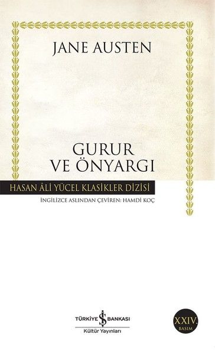
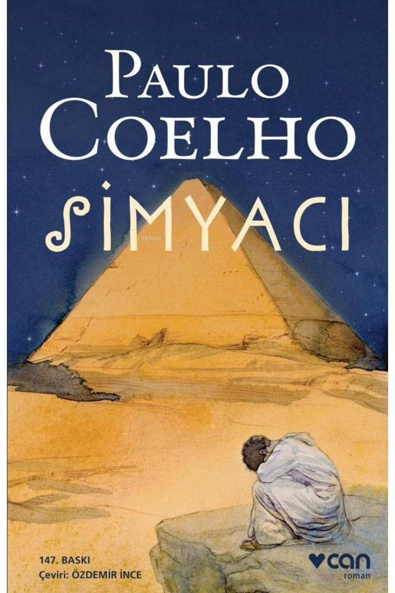
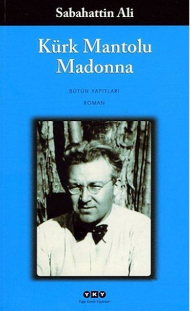

Zengin ve bekar Bay Bingley ile kibirli arkadaşı Bay Darcy’nin kasabaya gelişi, beş kız annesi Bayan Bennet için büyük bir umut kaynağı olur. Hikaye, ailenin en büyük kızı Jane ile Bingley arasındaki gelişen aşkı ve zeki Elizabeth ile mesafeli Darcy arasındaki "ilk nefretin" zamanla derin bir hayranlığa dönüşmesini anlatır.
Elizabeth, başlangıçta Darcy’yi kibirli bulup reddetse de, Darcy’nin yazdığı bir mektup ve aileyi büyük bir skandaldan (Lydia’nın kaçışı) gizlice kurtarması tüm önyargılarını yıkar. Sınıf farkları, toplumsal baskılar ve yanlış anlaşılmalarla örülü bu yolculuk, karakterlerin kendi gururlarını ve önyargılarını aşarak gerçek mutluluğu bulmalarıyla son bulur.

Gezgin satıcı Gregor Samsa, bir sabah bunaltıcı düşlerden uyandığında kendini dev bir böceğe dönüşmüş olarak bulur. İlk başta durumu geçici bir hastalık sansa da, ne sesinin ne de bedeninin artık insani olmadığını fark etmesiyle acı gerçekle yüzleşir. İşine geç kaldığı için eve gelen patronu onu gördüğünde korkudan kaçar, ailesi ise dehşete düşer.
Zamanla odasına hapsolan Gregor, sadece kız kardeşi Grete’nin yardımıyla hayata tutunmaya çalışır. Ancak evin maddi dengeleri bozulup Gregor bir "yük" haline geldikçe, ailesinin ona olan şefkati yerini nefrete bırakır. Babasının fırlattığı bir elmanın sırtında açtığı yara ve ailesinin onu dışlaması, Gregor’u ölüme sürükler. Gregor’un bir sabah hizmetli tarafından çöpe atılmasıyla son bulan bu trajik hikaye, modern insanın yalnızlığını ve toplumsal bağların kırılganlığını sarsıcı bir dille anlatır.

Dünya edebiyatının en çok okunan eserlerinden biri olan Simyacı, İspanya'dan kalkıp Mısır Piramitleri'nin eteklerinde hazinesini aramaya giden Endülüslü çoban Santiago’nun masalsı yolculuğunu anlatır. Santiago, rüyasında gördüğü hazinenin peşinden giderken krallarla tanışır, dolandırılır ve bir billuriye dükkanında çalışır. Ancak bu yolculuk aslında fiziksel bir mesafeden ziyade, kahramanın kendi "Kişisel Menkıbesini" bulma serüvenidir.
Yol boyunca evrenin dilini anlamayı öğrenen ve aşkla (Fatima) tanışan Santiago, aradığı hazinenin aslında sandığı kadar uzak olmadığını keşfedecektir. Sabrın, azmin ve işaretleri takip etmenin önemini vurgulayan bu eser, her yaştan okuyucuya kendi hayallerinin peşinden gitme cesareti aşılayan bir başyapıttır.

Ankara’da bir şirkette tercümanlık yapan, sessiz ve içine kapanık Raif Efendi’nin dışarıdan bakıldığında sıradan görünen hayatı, aslında büyük bir trajediyi gizlemektedir. İş arkadaşının, Raif Efendi’nin vefatından önce tuttuğu bir defteri okumasıyla başlayan hikaye, bizi 1920’lerin Berlin’ine götürür. Genç bir adamken gittiği Berlin'de bir sanat galerisinde gördüğü "Kürk Mantolu Madonna" tablosuna hayran kalan Raif, tablonun sahibi olan Maria Puder ile tanışır.
Bu tanışma, birbirine yabancı iki ruhun derin dostluğuna ve imkansız aşkına dönüşür. Ancak hayatın getirdiği zorunlu ayrılıklar ve cevapsız kalan mektuplar, Raif’in hayatını sonsuz bir melankoliye hapseder. Yıllar sonra öğreneceği acı gerçek ise bu aşkın sadece kalplerde değil, bir çocukta da hayat bulduğudur. İnsanın insanı tanımasının ne kadar güç olduğunu anlatan bu eser, Türk edebiyatının en hüzünlü başyapıtlarından biridir.

Jack London'ın yarı otobiyografik romanı Martin Eden, maddi imkânsızlıklar içinde iyi bir eğitim almak ve ismini edebiyat dünyasına duyurmak için yılmadan ve durmak bilmeden çalışan genç bir denizciyi konu alır. Yüksek sosyeteye mensup sevgilisinin gözünde saygın bir yer edinmek umuduyla yazarlığa soyunan Martin, yazdığı öyküler birkaç dergi tarafından peş peşe reddedilince ve çaylak bir gazeteci yüzünden sosyalist olmakla suçlanınca uğruna verdiği iki yıllık savaş gözüne çoktan kaybedilmiş görünür. Ne var ki başarı ve şöhret nihaiidir, fakat her şey sona erdiğinde Martin çok önemli bir şeyi; bir zamanlar sofralarına oturmak için can attığı ve son derece kültürlü olduklarını düşündüğü o yüksek kesimin aslında ne kadar da sığ ve sahte olduğunu keşfedecektir.
Martin Eden ile okuyucu, körpecik bir delikanlının bireysel devrimine baştan sona tanık olmakla kalmayacak, kendine olan inancını bir kez olsun yitirmeyen bu gencin eğitsel devrimini tamamladıktan sonra yaşadığı hayal kırıklığıyla sarsılacak.